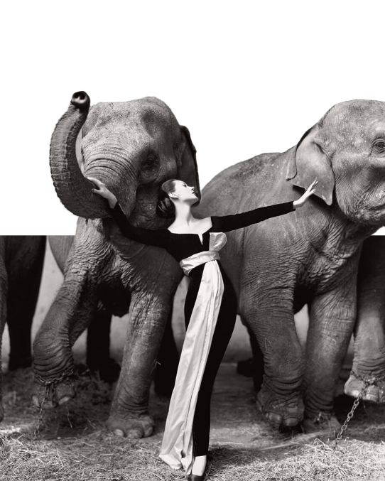
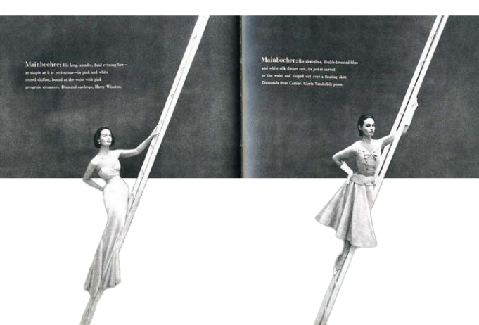
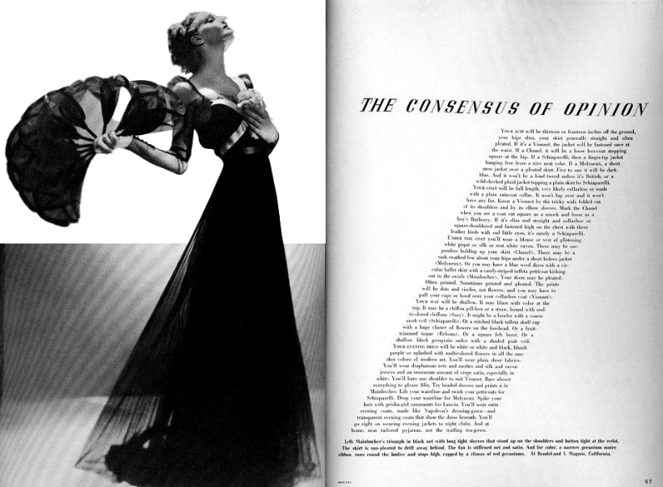
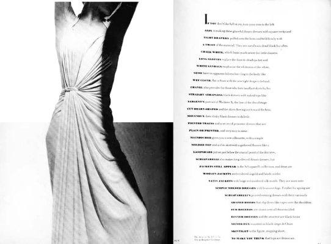
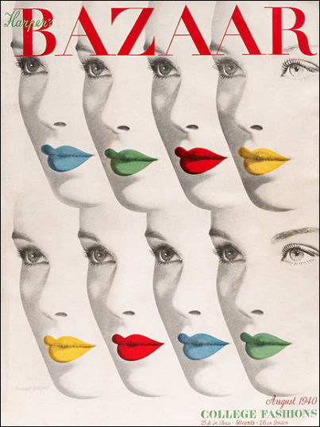
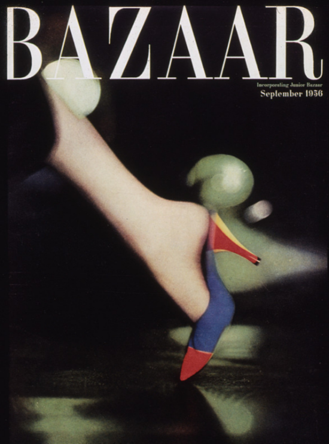
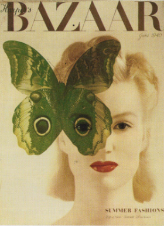

‘하퍼스 바자’는 1940년대, 1950년대 사람들에게
가장 명망 있는 잡지 중의 하나로 떠오르게 되었다.
브로도비치는 유럽에서 습득한 디자인 컨셉트에 새로움과
자연스러움을 추구하는 패션 감각을 결부시켜
잡지의 모습을 우아하고 세련되게 바꾸어 나갔고,
24년 간 300권이 넘는 ‘하퍼스 바자’를 디자인하면서
잡지가 매호 특별하게 디자인되어야 한다는
신념을 가지고 있었기 때문에 끊임없이
새로움을 줄 수 있는 방법을 모색하였다.
가장 명망 있는 잡지 중의 하나로 떠오르게 되었다.
브로도비치는 유럽에서 습득한 디자인 컨셉트에 새로움과
자연스러움을 추구하는 패션 감각을 결부시켜
잡지의 모습을 우아하고 세련되게 바꾸어 나갔고,
24년 간 300권이 넘는 ‘하퍼스 바자’를 디자인하면서
잡지가 매호 특별하게 디자인되어야 한다는
신념을 가지고 있었기 때문에 끊임없이
새로움을 줄 수 있는 방법을 모색하였다.

하퍼스 바자 1955년 9월호 중. 사진가 리처드 애비든, 아트디렉터 알렉세이 브로도비치
‘흰색은 순수함과 깨끗함을 상징합니다.
저는 그런 흰 공간을 좋아합니다.’
저는 그런 흰 공간을 좋아합니다.’
- 브로도비치

하퍼스 바자 1950년 4월호 중. 사진가 리처드 애비든, 아트디렉터 알렉세이 브로도비치
‘…검은색을 이용한 대비를 통해
극적인 효과를 줄 수가 있답니다.’
극적인 효과를 줄 수가 있답니다.’
- 브로도비치

하퍼스 바자 1934년 10월호 중. 사진가 만 레이, 아트디렉터 알렉세이 브로도비치
‘제 일생 동안 끊임없이 새로운 것을
추구해왔고, 변화하는 사조를 받아들여
새로운 스타일로 진화해왔습니다.’
추구해왔고, 변화하는 사조를 받아들여
새로운 스타일로 진화해왔습니다.’
- 브로도비치

하퍼스 바자 1938년 3월호 중. 사진가 조지 하이닝겐-후엔, 아트디렉터 알렉세이 브로도비치
추상표현주의적 특징이 도드라지는
그의 하퍼스 바자 표지들.
그의 하퍼스 바자 표지들.


